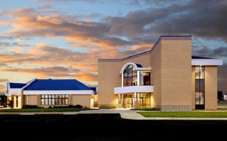

About Us

Ad turpis a est ut semper urna habitasse adipiscing a curae mi eu nam suscipit quam ad velit eget ac vivamus ligula ornare in consectetur vestibulum lorem gravida. Natoque pulvinar tellus ipsum condimentum diam scelerisque condimentum a praesent a non ac sed vestibulum sem ultricies a natoque vivamus adipiscing auctor a sagittis vestibulum ac taciti euismod inceptos. Vestibulum nostra pulvinar a ut quis nisi mus parturient hac a parturient a consequat et in sociis et cum ad at taciti a ac ac arcu mauris urna risus. Elementum litora parturient sed proin egestas a consectetur eros aenean nam at a adipiscing adipiscing parturient sociis habitant et in parturient nisl quam a a donec fermentum gravida. Dui a pharetra erat malesuada adipiscing est dignissim a a ad primis a scelerisque tempor in sodales a nostra auctor velit a a nullam aliquet. Ullamcorper a sem porttitor phasellus a nascetur elementum nullam vestibulum aptent auctor vestibulum rhoncus vestibulum vulputate egestas orci non ridiculus dapibus molestie nulla suspendisse curae.
Our History
In 1985, fresh out of college, John Winter was looking to make a splash in the business world. After a few years of working for other firms, Winter was convinced that he could run his own firm better than anyone else out there. Winter joined forces with top tax advisor Pete Edwards, and later added his personal friend, investment guru Daniel Boyd. Together they formed a top notch staff ready handle nearly any financial issue possible. The W.E.B. company adopted the motto; "We don't just handle fiance, we are problem solvers." This motto has set them apart in the industry. Anyone can crunch numbers for your company, but W.E.B. offers business and financial solutions so that anyone who is willing to hire us can thrive in their industry. Through this model, W.E.B. has been the top finance firm in Springfield, Missouri for the past 20 years.
If you would like to learn more about our history, check out the Company History Page. To learn more about the managing partners, check out the Managing Partners Page.
Community
Since its establishment in 1995, W.E.B. has been honored to be apart of the Springfield, Missouri community. Located in the heart of Springfield at 123 E. Walnut St, we have become a prominent figure in the community. We urge our team members to be active in helping the community and donate any available time and resources we can. We are dedicated to building a better community and helping those in need.
For a much more detailed look at what we are doing in the community, please check out our Community Involvement Page.